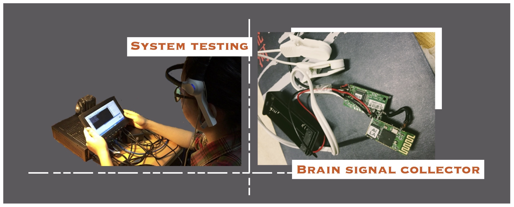

Electroencephalograph Controlled Music System
National Undergraduate Scientific & Technological Innovation Project | Team Learder; Device designer; System Developer
Electroencephalogram (EEG) signal has been studied as a biological signal input for human-computer interaction. This research defined a control signal -- focus value R to measure the concentration degree of human brain and utilize R to control the system.
The project applied self-controlled brain concentration degrees (the levels an individual can pay attention) into a human-computer interaction system like music control, which ideally may be used for the disabled like patients with Parkinson's disease, changing volume and shifting music as they like. We set thresholds for brain wave concentration levels (R) and blink frequency respectively; then R can be used to swift music and change volume, and blink frequency will work as a Pause/Stop button according to strength of eye blinking.

The system consisted of two parts -- a extraction module and a control module. The first module was deigned to collect brain signal. The other one was composed by a I3HGP embedded motherboard and a loudspeaker, which was used to complete the task of raw signal processing, programming and volume controlling.
The collector which is used to extract EEG, consisted of a TGAM module, a Bluetooth module, a dry electrode, two ear clips and a power supply. It can detect the weak EEG signal and eye blink signal from human brains and transmitted these values wirelessly to an embedded system.